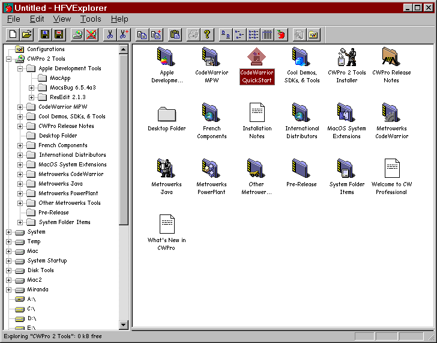

Manual contents

As you can see, the program is very much like Windows Explorer, and to keep the learning curve at absolute minimum, most commands follow Explorer conventions.
Click on the area in the picture above to jump to the description.